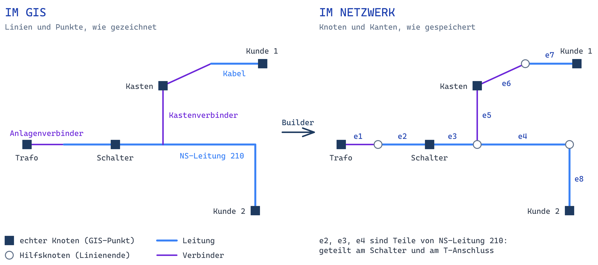
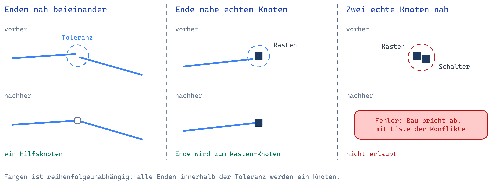
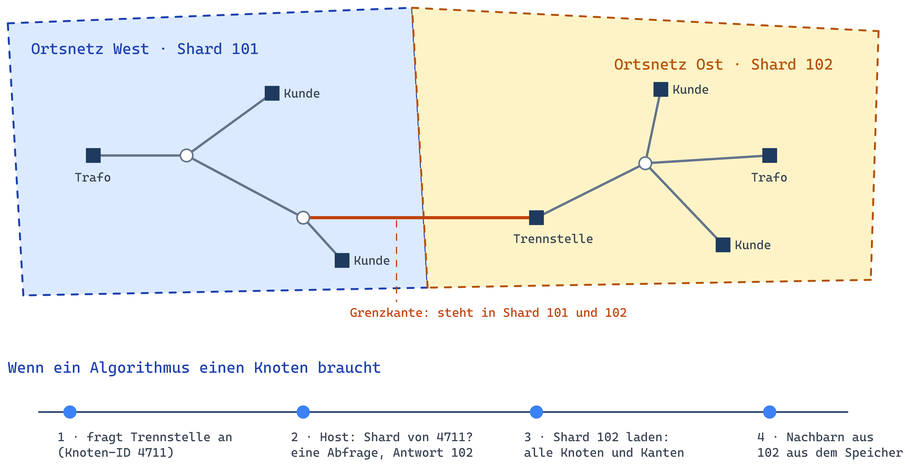

Blatt 2 · Netz bilden
Vom GIS-Plan zum Netzwerk
Der Builder bekommt Punkte und Linien mit ihren IDs und liefert Knoten und Kanten zurück. Der Host speichert sie. Dabei passieren drei Dinge: Enden werden gefangen, Linien werden geteilt, und jeder Knoten bekommt einen Shard.

Reihenfolge beim Bauen
- Echte KnotenDer Host übergibt zuerst alle Punkte: Kästen, Trafos, Schalter, Kunden. Jeder wird ein Knoten mit seiner ID.
- LinienDann alle Linien aus allen Feature-Klassen: Leitungen, Kastenverbinder, Anlagenverbinder.
- Fangen und teilenLinienenden schließen an Punkte an oder werden Hilfsknoten. Linien werden an Punkten und T-Anschlüssen geteilt; wo genau, kann der Host steuern (Blatt 7).
- AusgabeKnoten- und Kanten-Datensätze mit Shard. Der Host schreibt sie in seine Datenbank.
Knoten
Echte Knoten
Jeder GIS-Punkt wird ein Knoten mit der ID und dem Typ des Hosts. Ein Linienende, das auf einem echten Knoten landet, wird kein eigener Knoten, sondern schließt an diesen an.
Zwei echte Knoten an derselben Stelle sind zunächst ein Datenfehler: Der Builder bricht ab und meldet alle Stellen auf einmal. Oft ist es aber gewollt, etwa ein Kunde, der auf seinem Kasten gezeichnet ist. Dann wählt der Host einen Gewinner (in gView: der Layer weiter oben im Inhaltsverzeichnis), die anderen Punkte werden Aliase dieses Knotens und finden ihn weiter (ADR 0054). Punkte verschiedener Ebenen können mit getrennten Ebenen ohne Konflikt nebeneinanderliegen.
Hilfsknoten
Wo Linienenden zusammentreffen, aber kein Punkt liegt, entsteht ein Hilfsknoten. Er ist untypisiert (Typ 0) und bekommt eine Koordinate. Mit getrennten Ebenen hat jede Ebene einen eigenen Hilfstyp, und Enden verschiedener Ebenen ergeben zwei Hilfsknoten am selben Ort.
Seine ID vergibt der Host, abgeleitet aus Koordinate und Typ. So bleibt sie von Nacht zu Nacht gleich, und quittierte Fehler gehen nicht verloren.
Fangen mit Toleranz
Linienenden, die näher als die Toleranz beieinanderliegen, werden ein Knoten. Das passiert reihenfolgeunabhängig: egal in welcher Reihenfolge die Daten kommen, das Ergebnis ist gleich.

Kanten
- Teilung: Liegt ein Punkt oder das Ende einer anderen Linie mitten auf einer Linie, wird sie dort geteilt, wenn der Host nichts anderes festlegt (Blatt 7). Kreuzungen ohne gemeinsamen Punkt werden nicht verbunden; eine Freileitung über einem Kabel bleibt getrennt.
- Bezug zum GIS: Jede Kante kennt ihr Originalobjekt und den Bereich darauf, z. B. Leitung 210 von 48 m bis 112 m. So lässt sich ein Ergebnis auf der Karte nachzeichnen.
- Länge: Standard ist die Länge der Geometrie. Hat das GIS eine Aufmaßlänge, nimmt der Builder diese und teilt sie bei geteilten Linien anteilig auf.
- Mehrteilige Linien ergeben je Teil eigene Kanten mit demselben Originalobjekt.
Was der Builder liefert
Zwei Arten von Datensätzen, passend für Tabellen in einer Datenbank. Die Werte sind ein Beispiel zum Ausschnitt in Abb. 2.1.
Knoten
| ID | Typ | Koordinate | Shard | Original |
|---|---|---|---|---|
| T-12 | 25 · MS.Trafo | -12 480.20 / 5 342 871.05 | 101 | Trafo.12 |
| S-4711 | 17 · NS.Schalter | -12 455.80 / 5 342 871.05 | 101 | Schalter.4711 |
| N-9f3a | 0 · untypisiert (oder der Hilfstyp der Ebene) | -12 420.10 / 5 342 871.05 | 101 | keins (Hilfsknoten) |
Kanten
| ID | Von | Nach | Typ | Länge | Richtung | Original und Bereich | Shards |
|---|---|---|---|---|---|---|---|
| L-210#1 | A-77 | S-4711 | 11 · NS.Leitung.Kabel | 48.0 m | beide | Leitung.210 · 0–48 m | 101 / 101 |
| L-210#2 | S-4711 | N-9f3a | 11 · NS.Leitung.Kabel | 64.0 m | beide | Leitung.210 · 48–112 m | 101 / 101 |
| KV-88 | N-9f3a | K-17 | 13 · NS.Kastenverbinder | 4.2 m | beide | Kastenverbinder.88 · ganz | 101 / 101 |
Dazu kommen die Gewichte als eigene Zuordnung (Kante, Gewicht, Wert), siehe Blatt 4. Hinweise wie „Knoten außerhalb aller Ortsnetze“, „zusammengeführt“ oder „Teilung abgelehnt“ liefert der Builder als Liste, ohne abzubrechen.
Sharding: Ortsnetze als Pakete
Ein großes Netz soll nie ganz in den Speicher. Darum speichert der Host jeden Knoten mit einer Shard-ID und lädt bei Bedarf einen ganzen Shard auf einmal. Die Shards kommen aus Polygonen, die der Host beim Bauen mitgibt, typischerweise die Ortsnetze. Meistens wird ohnehin innerhalb eines Ortsnetzes gerechnet.

- Zuordnung: Punkt-in-Polygon für jeden Knoten. Linien werden an Polygongrenzen nicht geschnitten.
- Überlappung: Das erste passende Polygon gewinnt. Der Builder meldet Überlappungen als Hinweis.
- Nach Typ: Ein Polygon kann auf ein Typmuster beschränkt sein. So gelten Ortsnetze für die Niederspannung, und die Mittelspannung bekommt gröbere Polygone. Sonst würde ein Mittelspannungs-Trace jedes Ortsnetz komplett mitladen.
- Kein Treffer: Ein Standard-Shard des Hosts, sonst eine Rasterzelle. Beides kommt als Hinweis, weil es meist auf eine Lücke in den Polygonen deutet.
- Laden: Wie und wo der Host die Shards ablegt und zwischenspeichert, entscheidet er selbst. SpatialNET fragt nur nach IDs.